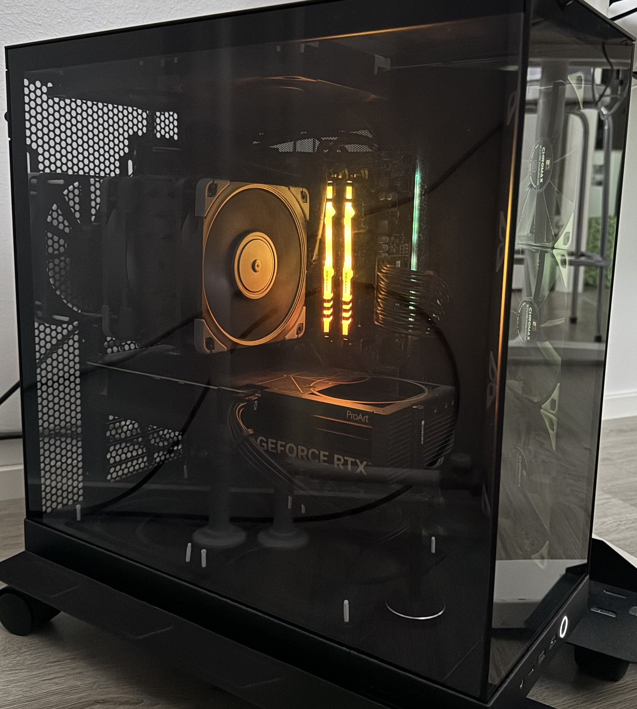

Tietoa itsestäni
Terve! Olen 20-vuotias Joni Helsingistä. Kävin ala-asteen herttoniemenrannassa ja yläasteen porolahden peruskoulussa. Lopulta siirryin Lauttasaaren lukioon.
Tietoa harrastuksestani
Minua on aina kiinnostaneet videopelit, ja tämä on ollut suuri intohimoni pienestä pitäen. Sisarukseni tutustuttivat minut pelien maailmaan, ja pelinimeni on "SupaJ0nes".
Tietokoneen kasaaminen kiinnosti minua aiemmin paljon. Nykyään teen sitä enemmän harrastusmielessä. Tässä on kotona kasaamani tietokoneeni:
